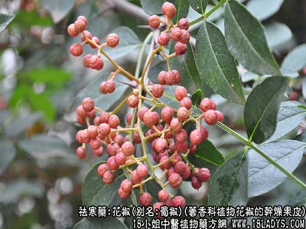
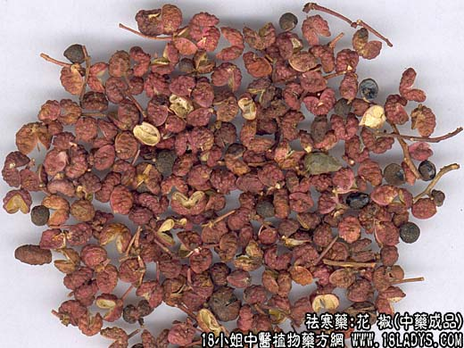
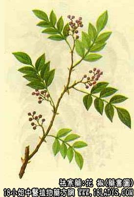

花椒为常用中药。《神农本草经》列为中品。
别名：蜀椒、川椒、巴椒、汉椒。
来源：为芸香科植物花椒的干燥果皮，种子（椒目）均供药用。商品中分两大类，一是青花椒，原植物主要为香椒子，另一种是红花椒原植物主要是花椒。此外，尚有多种花椒属植物的果实在各地混用，药用以青椒最为普遍。
产地：主产于河北、山西、四川等地。
性状鉴别：青椒呈裂开两瓣状，裂口如八字形。直径3~4毫米。表皮灰绿色至黄绿色。外皮不平坦，满布小疙瘩。基部有果柄断痕，壳内面黄白色光滑，偶含有黑色具光泽的圆形种子（椒目）。壳质较脆，易折断。香气浓厚，味麻辣。
红花椒，个较大，直径4~5毫米。表面紫红色或棕红色。壳内面黄色。其它与青椒相同。
青椒以色青绿、皮厚、香气大、无细梗及椒目者为佳。
花椒以身干，色红，无梗及椒目者佳。
主要成分：花椒果实含挥发油0.7%（贵州产）、2%~4%（甘肃产）、4%~9%（广东产）。挥发油中含牻牛儿醇，柠檬烯，枯醇等。果实尚含甾醇、不饱和有机酸等。
青椒（东北产）的果实含爱草脑、佛手柑内脂及苯甲酸。爱草脑是果实挥发油中的主要成分，约占90%。
花椒的功效与作用：1、花椒所含牻牛儿醇，小剂量能抑制大鼠的自发活动。对离体兔小肠，低浓度时作用不恒定，大剂量能抑制肠运动。给大鼠口服后，能抑制胃肠运动，对大肠运动则影响不大。接近死量时则有泻下作用。小剂量口服，对大鼠有轻度的利尿作用；但大剂量可抑制尿排泄。
2、大鼠口服的半数致死量为4.8/kg，兔静脉注射则为50mg/kg。动物死亡皆由于呼吸麻痹。此死之原因则由呼吸极度困难所致。
3、牻牛儿醇对豚鼠蛔虫有驱虫作用。另报道，花椒烯醇液有局部麻醉作用，效力较地卡因稍弱；在豚鼠之浸润麻醉中，效力强于普鲁卡因。
炮制：除果皮及椒目，生用或炒用。
性味：辛，温，有毒。
归经：入脾、胃、肺、肾经。
功能：散寒除湿发汗，通血脉，暖胃消食。
主治：风寒咳嗽，留饮宿食，腹痛虫草疾，呕吐泻痢，蛔虫、蛲虫，疝气，阴痒湿疮。
临床应用：花椒辛温，善祛阴寒之邪，能温中而止痛，暖脾而止泻，为治脾虚寒要药，借其辛辣之性，而有驱杀蛔虫之功。
1、用于脘腹冷痛，寒湿泄泻之症，脘腹冷痛，常与党参、干姜等配伍。如大建中汤：寒湿泄泻，可与苍术、陈皮、木香等配伍。外用：治脘腹冷痛、将花椒炒热，布裹温熨痛处，可奏止痛之效。
2、用于虫积腹痛或蛲蛔之症；常与乌梅同用，并可根据症候可相应配伍生姜、榧子等。挟热者可与黄连、黄柏等配伍。
3、用于皮肤湿疹瘙痒，可与地肤子、苦参、白矾等配伍煎水熏洗。
使用注意：阴虚火旺者忌服。孕妇慎服。畏款冬。恶栝楼，防葵。畏雌黄。（《别录》）：“多食令人乏气，口闭者杀人。”（《唐本草》）：“畏橐吾、附子、防风”。
用量：1.5-4.5g；或入丸散，外用；研末调敷或水煎洗患处。
处方举例：1、大健中汤，治心胸中大寒痛，呕不能饮食，腹中寒，上冲皮起，出现有头足、上下痛而不可触近；蜀椒二合、干姜120g，人参60g。上三味，以水四升，煮取二升，分温服。（《金匮要略》）
2、椒茱汤，治妇人阴痒不可忍，非以用热汤泡洗有不能己者；花椒、吴茱萸、蛇床子各30g，藜芦15g，陈茶1撮，烧盐60g。水煎熏洗。（《医级》）
注：1、江苏所产一种“小花椒”，表面无小疙瘩，而有小凹坑，如陈皮之外皮。体稍小，肉较青花椒为薄。果实由1~3个小果组成。有八角、茴香之香气，麻味淡。
2、贵州贞丰所产“花椒”裂口较小，椒目多为两半圆形组成。味较青椒麻辣。
3、湖北襄阳所产“花椒”形如小梅花骨突，外皮有少数小疙瘩及皱纹。由4-6小果组成，小果常从顶端裂开，内有一卵圆形黑色种子。捏碎则内外皮分开，外皮表面棕黄色，内皮黄色或黄白色光滑。香气较淡，味辣微麻。